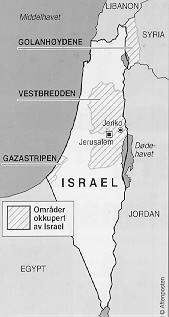

Faktaservice nr. 3 95/96, OKTOBER 1995
OSLO II-AVTALEN:
Klar etter hard forhandlingsinnspurt
Israel og PLO tar et nytt, avgjørende skritt mot endelig fred. Etter en utmattende forhandlingsrunde på 80 timer ble den såkalte Oslo II-avtalen klar 24. september. Avtalen ble undertegnet i Det hvite hus fire dager senere.Israel går nå inn i det nye året, år 5756 ifølge den jødiske tidsregningen, ved å ta et nytt, avgjørende skritt mot en endelig fred med palestinerne.
Israelerne trekker seg ut av de største byene på Vestbredden i løpet av seks måneder, mens Hebron får spesielle sikkerhetsordninger. Palestinske fanger løslates, og det går mot palestinske valg i mars neste år, fremgår det av avtalen.
Palestinerne har kommet nærmere sitt endelige mål, en egen palestinsk stat, i og med at Oslo II nå er i havn. På kort sikt er det snakk om opprettelsen av en selvstyrt palestinsk "enhet" på Vestbredden og i Gaza.
400 siders avtale
Den høytidelige underskriftsseremonien skjedde i Det hvite hus i Washington 28. september. Israels statsminsiter Yitzahak Rabin og PLO-lederen Yasir Arafat undertegnet en 400 siders avtale som staker ut veien mot en fullverdig fredspakt mellom Israel og PLO. Utenriksminister Bjørn Tore Godal var blant æresgjestene som bevitnet dokumentet med sin signatur.Dette markerer et stort skritt videre i fredsprosessen. Og det faktum at den nye delavtalen underskrives av tunge politiske vitner, viser at verden støtter arbeidet for fred i Midtøsten, sa Godal.
Norges plass i rampelyset skyldes både Oslo-forhandlingene, som for over to år siden slo hull i muren mellom gamle fiender, og vår rolle som leder for arbeidet med å skaffe penger til oppbygging på Vestbredden og i Gaza.
EUs Felipe Gonzalez, Egypts president Husni Mubarak, Russlands utenriksminister Andrej Kosyrev og Jordans kong Hussein garanterte også avtalen, sammen med USAs president Bill Clinton og hans utenriksminister Warren Christopher.
Minus to
Clinton sa at avtalen må bli et skritt i retning av en omfattende fred i hele Midtøsten. Vi må fortsette å arbeide til freden er gjennomført, til det er blitt en fred som også omfatter Syria og Libanon, sa han.Seremonien, som varte i nesten to timer, utviklet seg til en samordnet demonstrasjon av forsoning og vennlighet mellom gamle fiender. Det var første gang at Arafat, Rabin, Hussein, Mubarak og Clinton møttes samtidig.
Men nesten alle talerne pekte på at Syria og Libanon ikke var tilstede, og at en omfattende fred i Midtøsten ikke blir fullstendig uten dem. Clinton sa at det stadig var plass til flere rundt bordet.
Mye uløst
Oslo II-avtalen er bare begynnelsen på den lange marsjen mot fred. I mai neste år åpner forhandlingene om Vestbreddens og Gaza-stripens endelige status. Da skal man snakke om alle de spørsmål som fortsatt står uløst fordi de betraktes som altfor besværlige og uhåndterlige. Da står også Jerusalems stilling på dagsordenen, likeledes de israelske nybyggernes skjebne og de palestinske flyktningenes fremtid.Kilder: Reuter og NTB

Områder okkupert av Israel.
[Innhold] [Info]
[Aftenposten hjemmeside] [Til Fakta hovedside]
{kind=link}